MyTweet Assignment 03
This lab has been developed to assist in the preparation of the current assignment, which comprises the development of a MyTweet suite of apps. The lab explains how to capture geolocations using map markers and also how to display a user's list of residences as markers on a map. A version of MyRent has been refactored to include sample features since MyRent structure closely resembles that of MyTweet.
Preview
This is a brief description of the lab:
- Began with baseline MyRentV06 (downloadable here)
- Added Welcome, Sign up and Login activities.
- Added Map activity-fragment pair.
- Added a refresh service and associated menu icon to allow user to manually refresh residence list
- Converted MyRentV06 into an Android client | Play server pair
- Wrote a simple JUnit test app
- Allows residence geolocation to be set using Google Map
- This is in addition to existing manual input option
- Access map from menu option
- Display a user's residence list as map markers
- marker denotes geolocation residence
- current residence marker colored differently from others
The purpose of this lab is to provide some sample code to allow one to easily integrate a map into the current assignment's MyTweet app.
The lab does not provide a detailed explanation, but rather leaves it to the student to mine whatever code may be of use.
The starting point is MyRentV06. We have chosen this version (rather than the final version of MyRent) to reduce as much as possible the amount of baseline code.
Figure 1 shows MyRentV06 screenshots and Figure 2 the refactored app:
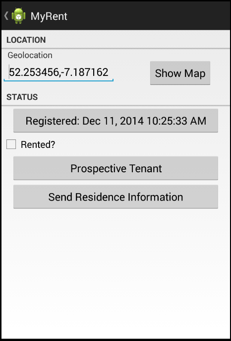
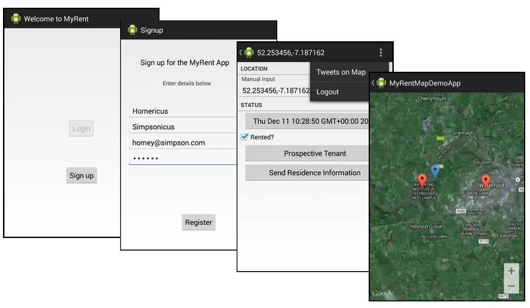
The projects completed as part of this lab are available to download here:
Setup
You may encounter initial errors on importing the archives:
-
myrent-map-demo-app (Android)
-
myrent-map-demo-service (Play)
-
myrent-map-demo-test (Play)
Play apps:
- Import the project into Eclipse
- Delete the eclipse folder
- In the terminal browse to the folder containing the Play app & run the following commands in succession:
play eclipsify
play deps
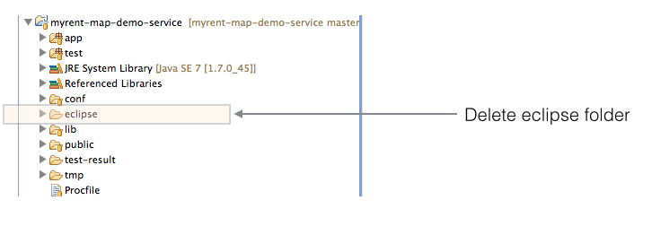
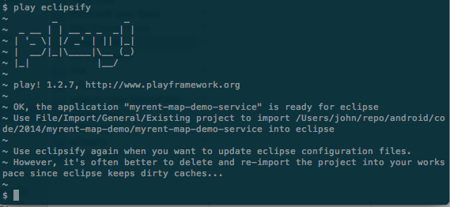
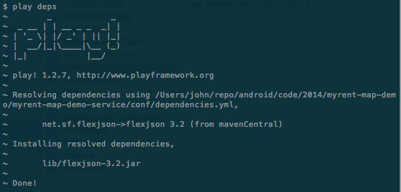
Android app
Ensure google-play-services_lib is present in your workspace.
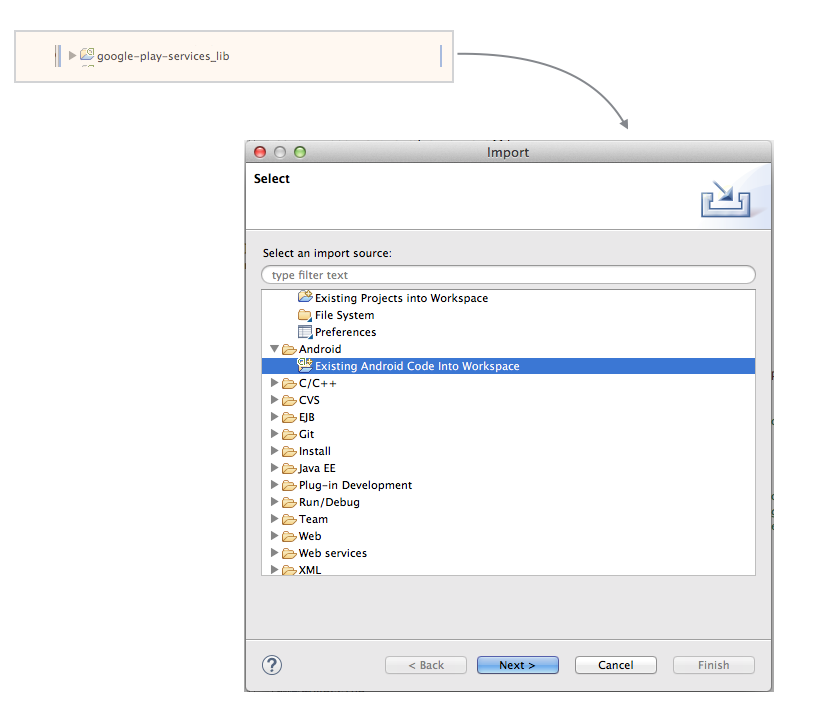
Select the project in Eclipse workspace and via the context menu open the properties view:
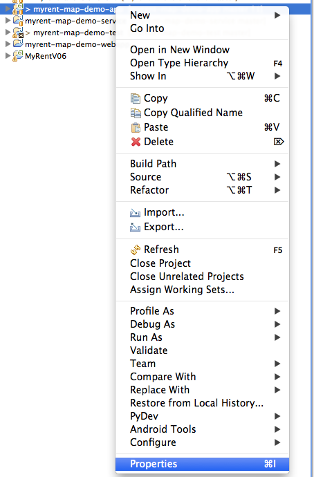
Add the play services library to the project:
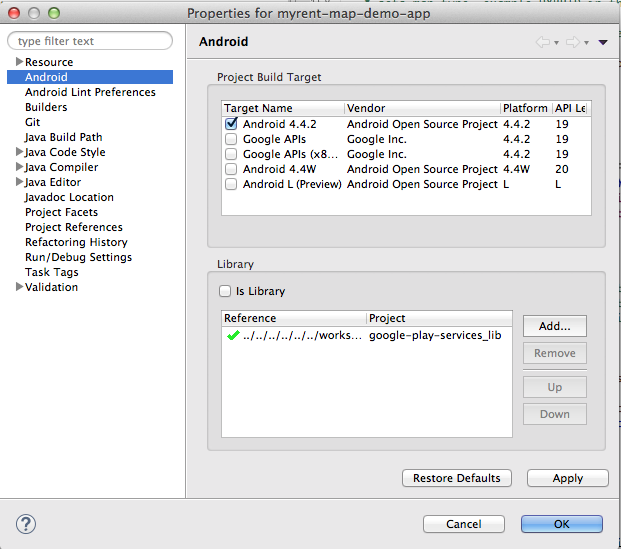
Markers
Maps Live: Getting Started with Markers on Android
An archive of the programme is available to download.

Map (source)
MapActivity.java
package org.wit.myrent.map;
import org.wit.myrent.R;
import android.os.Bundle;
import android.support.v4.app.Fragment;
import android.support.v4.app.FragmentActivity;
import android.support.v4.app.FragmentManager;
public class MapActivity extends FragmentActivity
{
public void onCreate(Bundle savedInstanceState)
{
super.onCreate(savedInstanceState);
setContentView(R.layout.fragment_container);
FragmentManager manager = getSupportFragmentManager();
Fragment fragment = manager.findFragmentById(R.id.fragmentContainer);
if (fragment == null)
{
fragment = new MapFragment();
manager.beginTransaction().add(R.id.fragmentContainer, fragment).commit();
}
}
}
package org.wit.myrent.map;
//import java.util.ArrayList;
import java.util.Iterator;
import java.util.List;
import java.util.UUID;
import org.wit.android.helpers.MapHelper;
import org.wit.myrent.R;
import org.wit.myrent.activities.ResidenceFragment;
import org.wit.myrent.app.MyRentApp;
import org.wit.myrent.models.Portfolio;
import org.wit.myrent.models.Residence;
import android.os.Bundle;
import android.support.v4.app.FragmentManager;
import android.view.LayoutInflater;
import android.view.MenuItem;
import android.view.View;
import android.view.ViewGroup;
import com.google.android.gms.maps.CameraUpdateFactory;
import com.google.android.gms.maps.GoogleMap;
import com.google.android.gms.maps.SupportMapFragment;
import com.google.android.gms.maps.model.BitmapDescriptorFactory;
import com.google.android.gms.maps.model.CameraPosition;
import com.google.android.gms.maps.model.LatLng;
import com.google.android.gms.maps.model.LatLngBounds;
import com.google.android.gms.maps.model.Marker;
import com.google.android.gms.maps.model.MarkerOptions;
public class MapFragment extends SupportMapFragment implements GoogleMap.OnMarkerDragListener,
GoogleMap.OnCameraChangeListener
{
private MyRentApp app;
SupportMapFragment mapFragment;
GoogleMap gmap;
Marker marker;
LatLng markerPosition;
boolean markerDragged;
Boolean dragFlag;//indicates if the markers may be dragged: value obtained from Intent.
String currentGeolocation;// = "52.253456,-7.187162";
private Residence currentResidence;
private Portfolio portfolio;
@Override
public void onCreate(Bundle savedInstanceState)
{
super.onCreate(savedInstanceState);
setHasOptionsMenu(true);
UUID resId = (UUID)getActivity().getIntent().getSerializableExtra(ResidenceFragment.EXTRA_RESIDENCE_ID);
dragFlag = (Boolean)getActivity().getIntent().getSerializableExtra("MarkersDraggable");
app = (MyRentApp) getActivity().getApplication();
portfolio = app.portfolio;
currentResidence = portfolio.getResidence(resId);
}
@Override
public View onCreateView(LayoutInflater inflater, ViewGroup parent, Bundle savedInstanceState)
{
super.onCreateView(inflater, parent, savedInstanceState);
View v = inflater.inflate(R.layout.fragment_map, parent, false);
getActivity().getActionBar().setDisplayHomeAsUpEnabled(true);
return v;
}
@Override
public void onPause()
{
super.onPause();
}
@Override
public boolean onOptionsItemSelected(MenuItem item)
{
switch (item.getItemId())
{
case android.R.id.home:
getActivity().onBackPressed();
return true;
default:
return super.onOptionsItemSelected(item);
}
}
/* ====================== map ========================================== */
private void initializeMapFragment()
{
FragmentManager fm = getChildFragmentManager();
mapFragment = (SupportMapFragment) fm.findFragmentById(R.id.map);
if (mapFragment == null)
{
mapFragment = SupportMapFragment.newInstance();
fm.beginTransaction().replace(R.id.map, mapFragment).commit();
}
}
@Override
public void onMarkerDragStart(Marker arg0)
{}
@Override
public void onMarkerDrag(Marker arg0)
{}
@Override
public void onMarkerDragEnd(Marker arg0)
{
currentGeolocation = MapHelper.latLng(arg0.getPosition());
getActivity().setTitle(currentGeolocation);
currentResidence.geolocation = currentGeolocation;
gmap.animateCamera(CameraUpdateFactory.newLatLng(arg0.getPosition()));
markerDragged = true;
}
/*
* this Camera refers to Google map, not device camera
* When camera change equivalent to changed map position here
* For example by panning map to new position
* Method does the following:
* saves zoom position to model layer
* removes existing non-null marker
* creates and positions new marker to residence geolocation
* Marker draggable attribute set by flag dragFlag
*/
@Override
public void onCameraChange(CameraPosition arg0)
{
currentResidence.zoom = arg0.zoom;
markerPosition = MapHelper.latLng(getActivity(), currentGeolocation);
if (marker != null)
{
marker.remove();
}
marker = gmap.addMarker(new MarkerOptions()
.position(markerPosition)
.draggable(dragFlag)
.visible(true)
.title("residence origin")
.alpha(0.7f)
.icon(BitmapDescriptorFactory.defaultMarker(BitmapDescriptorFactory.HUE_AZURE))
.snippet("GPS : " + markerPosition.toString()));
addVisibleRegionMarkers();
}
/*
* initializes and renders the map
* sets map type, example HYBRID in this case
* sets the drag marker listener (but does not create a marker)
* sets the map (camera) changed listener
*/
private void renderMap(LatLng markerPosition)
{
if (mapFragment != null)
{
gmap = mapFragment.getMap();
if (gmap != null)
{
gmap.animateCamera(CameraUpdateFactory.newLatLngZoom(markerPosition, (float)currentResidence.zoom));
gmap.setMapType(GoogleMap.MAP_TYPE_HYBRID);
gmap.setOnMarkerDragListener(this);
gmap.setOnCameraChangeListener(this);//this Camera refers to Google map, not device camera
}
}
}
/* @see http://stackoverflow.com/questions/18206615/how-to-use-google-map-v2-inside-fragment
* Necessary to wait until MapFragment created before initializing map fragment
* Note that map fragment is nested within residence fragment. See the xml layout file for residence frag
*/
@Override
public void onActivityCreated(Bundle savedInstanceState)
{
super.onActivityCreated(savedInstanceState);
currentGeolocation = currentResidence.geolocation;
initializeMapFragment();
}
@Override
public void onStart()
{
super.onStart();
renderMap(MapHelper.latLng(getActivity(), currentGeolocation));
}
/**
* add a marker to map corresponding to location of arg res
* markers set non-draggable
* @param the Residence object for which marker added to map
*/
public void addMarker(Residence res)
{
LatLng pos = MapHelper.latLng(res.geolocation);
MarkerOptions options = new MarkerOptions().position(pos)
.draggable(false)
.visible(true)
.alpha(0.7f)
.title("Residence Location")
.snippet("GPS : " + res.geolocation);
gmap.addMarker(options);
}
/**
* Add markers within visible region (that is the visible screen)
*/
public void addVisibleRegionMarkers()
{
LatLngBounds bounds = gmap.getProjection().getVisibleRegion().latLngBounds;
List<Residence> residences = portfolio.residences;
Iterator<Residence> it = residences.iterator();
while(it.hasNext())
{
Residence r = it.next();
LatLng markerPoint = MapHelper.latLng(r.geolocation);
//include points within visible region not including current residence
if(bounds.contains(markerPoint) && !r.getUuid().equals(currentResidence.getUuid()))
{
addMarker(r);
}
}
}
}
Map (analysis)
Here are some of the features of the fragment:
Fields include a map, marker and current marker position
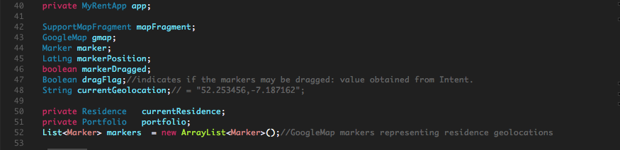 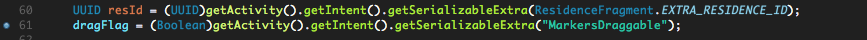
When one drags and then drops a marker the current marker position is:
- displayed in the action bar title
- saved to the current residence object
- used to update the map displayed on the app
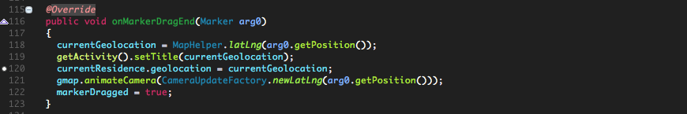
When the map camera changes (for example by scrolling or panning the map), all visible markers present within the visible portion of the map are displayed:
addVisibleRegionMarkers();
- Obtain the coordinates defining the boundary of the visible map
- Iterate the list of current user's residences
- If a residence is:
- Located within visible region map
- Is not the current residence
- Then display that residence's marker (red)
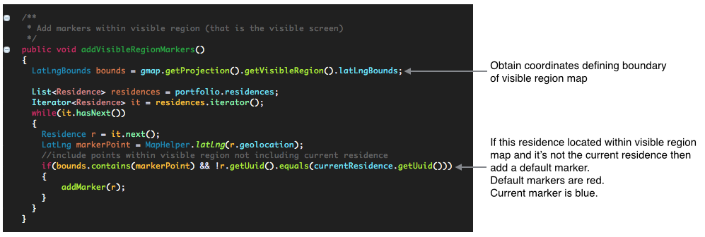
The current user's residence will be denoted by a blue marker icon.
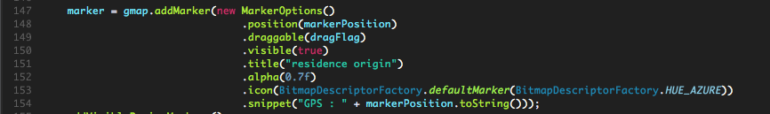
It will be necessary also to modify the manifest permission and obtain a Google Map API V2 key.
- This has been dealt with in detail in an earlier lab.
Here is the layout file for the map:
fragment_map.xml
<LinearLayout xmlns:android="http://schemas.android.com/apk/res/android"
android:layout_width="match_parent"
android:layout_height="match_parent"
android:orientation="vertical" >
<FrameLayout
android:id="@+id/map"
android:layout_width="match_parent"
android:layout_height="wrap_content"/>
</LinearLayout>
Map (Launch)
The map may be launched from a menu item in the sample app (myrent-map-demo-app).
- From residence list view
- Here the map will be read-only (marker cannot be dragged)
- From residence details view
- The intention here is to use the map to set the residence location
- Only the current residence's markers are draggable
We enforce this condition on marker draggability by sending a boolean flag in the Intent
- draggable false when sending intent from residence list fragment
- no current residence
- draggable true when sending from residence details fragment
- option to set current residence geolocation with map marker.
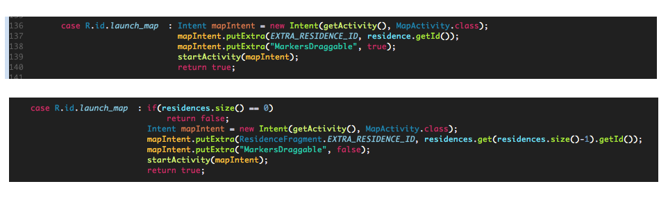
Notice that in the case of the intent sent from ResidenceFragment, we chose the last residence in the list to send as an intent extra.
Map(Geolocation)
Undoubtedly more efficient and elegant methods exist for transmitting the marker coordinates to the model layer. But this is how it's done in this prototypal app:
- We create a residence object in ResidenceListFragment and store a reference to it in portfolio.
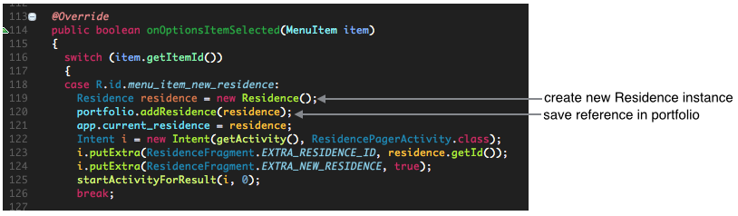
-
In the map fragment we have a field in which to store this same reference (to the current residence instance):
- here we name it currentResidence.
-
When we stop dragging the marker, its position is assigned to the residence's geolocation.
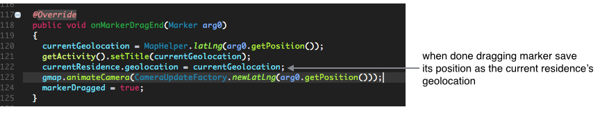
- We return to the Residence details view using the up button. When we have completed our work in this view we again use the up button to return to the list view. This routes the code through the create_update_residence method that eventually results in a network call to create a new residence on the server.
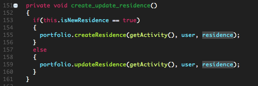
A somewhat similar process is performed should we change an existing residence in the details view except that updateResidence is invoked instead of createResidence.
- To support this feature we have used a boolean flag to distinguish beteween a residence details view being rendered as part of creating a new residence or making changes to an existing residence.
- We have also added the necessary functionality to the APIs to support updating.
Map(Integration)
Integrating the Map activity|fragment pair into a project is straightforward.
MapActivity simply requires the presence of the fragment_container.xml file:
- This is located in res/layout
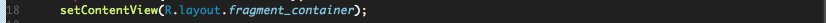
MapFragment requires a layout file, also located in the res/layout folder
- fragment_map.xml
MapFragment has the following dependencies:
- Model classes
- Residence
- Portfolio
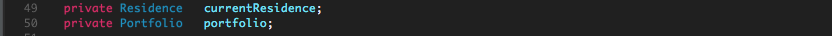
- ResidenceFragment
- Two objects should be present in the Intent:
- A residence UUID
- A boolean flag indicating whether markers are draggable or not
- Two objects should be present in the Intent:
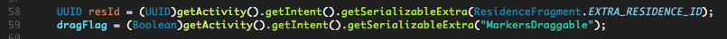
- MyRentApp
- The Application subclass
- Should contain a Portfolio instance
- The Application subclass
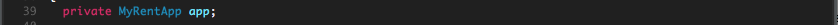 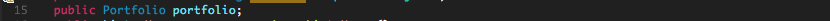
- Portfolio
- Should contain
- a method Residence getResidence(UUID)
- a list of residences
- Should contain
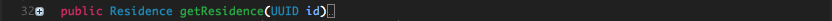 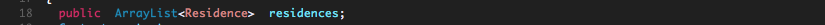
There may be some further dependencies but should these exist they should be easily identifiable at compile time.